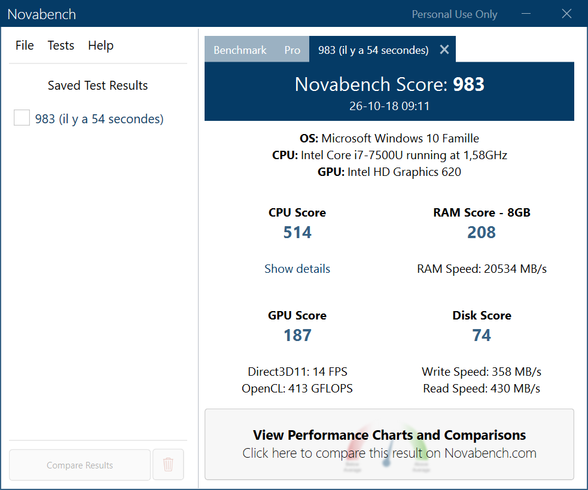
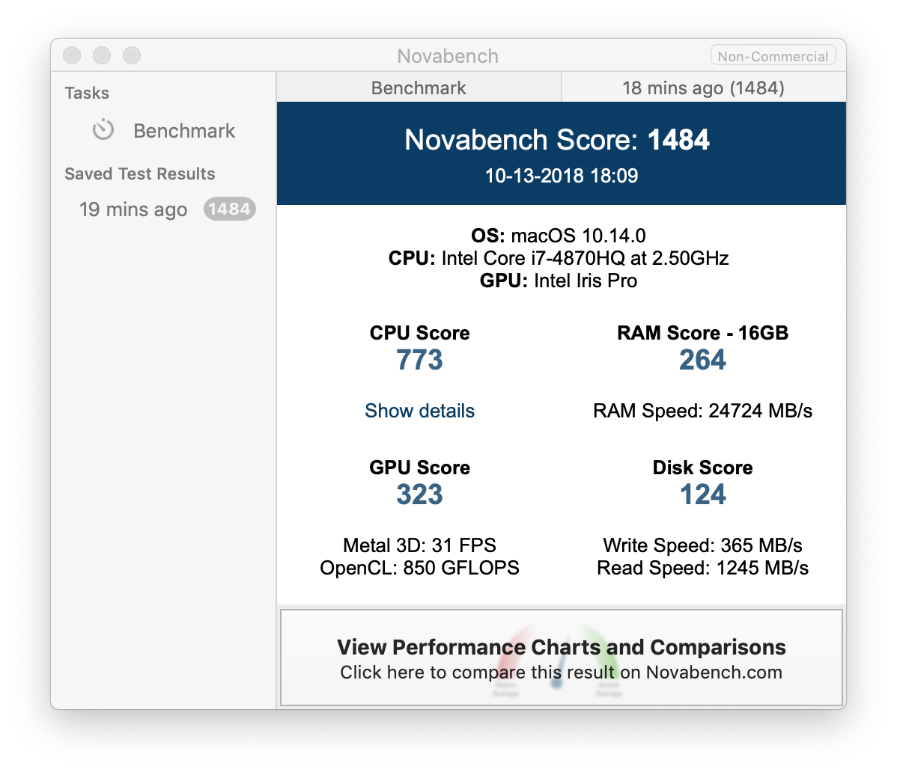

A.1 Prérequis
Avant d’installer la SciViews Box 2018, vérifiez que votre ordinateur répond aux conditions requises et qu’il est correctement configuré.
A.1.1 Ordinateur
La SciViews Box 2018, et la Science des Données en général, nécessitent un ordinateur ayant une puissance de calcul suffisante. Les tablettes et autres chromebooks sont donc exclus (sauf à être utilisés comme simples browsers web avec les calculs déportés sur un serveur, voir par exemple Chromebook Data Science). Si l’utilisation d’un serveur est une bonne idée pour l’apprentissage, ce n’est pas une solution sur le long terme pour tout le monde. En effet, vous êtes et restez dépendant du serveur que l’on a bien voulu configurer et partager avec vous (sera-t-il encore disponible après votre cours, par exemple ?). La solution proposée avec la SciViews Box vous rend complètement autonome dès le départ. Le choix d’un ordinateur ayant une capacité de calcul suffisante n’est pas aisé et les disparités en matière de performances sont énormes, voir NovaBench CPU score.
La configuration de référence est la suivante, avec un score global Novabench d’environ 1000 :
- Processeur : à 2 ou 4 coeurs / 4 threads d’une vitesse de calcul suffisante (score CPU Novabench d’environ 500).
- Mémoire vive : 8Go avec un score RAM Novabench d’environ 200.
- Disque dur : disque rapide SSD de 256Go (score disque Novabench d’environ 75 avec vitesse d’écriture >= 300Mo/s et vitesse de lecture >= 400Mo/s).
- Affichage : 1920x1080 ou mieux. La plupart des cartes graphiques ou des coprocesseurs graphiques intégrés conviennent (pas besoin d’une bête de course si vos calculs ne nécessitent pas des instructions GPU, en tous cas). Comme base, nous considèrerons un score GPU NovaBench d’environ 200 qui correspond au processeur graphique intégré Intel HD 620.
- Réseau : Wifi à la norme 802.11ac.
- Connectique : USB 3.0 ou C pour ajouter des périphériques, HDMI ou DisplayPort pour connecter un écran externe, et une prise casque pour visionner des vidéos sans déranger les voisins.
- Portabilité et autonomie : 13 pouces pour un poids < 1,5kg pour un ordinateur à enmener partout, sinon 15 pouces et un poids <= 2kg. Autonomie d’au moins 5 à 6h.
- Système d’exploitation : récent et si possible 64-bit. Windows 7 ou plus convient (mais pensez à mettre-à-jour vers Windows 10), MacOS 10.10 Yosemite ou plus, ou un Linux tel Debian 8 (Jessie) ou 9 (Stretch), Ubuntu 16.04 Xenial ou supérieur, …
- Une configuration “standard” avec au moins 20Go de libre pour la SciViews Box (nécessairement sur le disque C: sous Windows), et une configuration non bidouillée (répertoire utilisateur et programmes standards, entre autres).
Pour une configuration de base, vous pouvez aller jusqu’à diviser les scores Novabench et les valeurs (nombre de coeurs CPU, taille de la mémoire vive et du disque) par deux, et pour une configuration performante, multipliez-les par deux, et ajoutez-y éventuellement une carte graphique Nvidia performante pour des calculs GPU et un second disque de 1To pour stocker des gros jeux de données. Un “laptop” (ordinateur portable) est mieux, mais si vous n’avez pas besoin d’une solution nomade, un “desktop” convient aussi et est plus modulable. Pour tester votre système, nous vous proposons donc d’utiliser le logiciel gratuit pour un usage personnel Novabench. Vous obtiendrez un rapport, voir ci-dessous un résultat pour un PC en configuration de référence (Asus Zenbook UX330U) et un Mac en configuration optimale MacBook Pro 15 pouces mid-2015. Vous pourrez comparer à la configuration de référence :


A.1.2 Activation de la virtualisation
La virtualisation fait appel à un jeu d’instructions disponible sur pratiquement tous les processeurs modernes (Intel VT-x ou AMD-v). Malheureusement, elle est désactivée par défaut sur quasi tous les PC (mais les Macs sont, eux, configurés correctement en sortie d’usine). Tant que ces instructions de virtualisation ne seront pas activées, le programme d’installation de la SciViews Box va bloquer avec le message suivant:

Même si vous arriviez à l’installer quand même, vous ne pourriez pas la démarrer, et verriez juste le message suivant (issu de la version précédente de la SciViews Box):

Pour activer ce jeu d’instructions, il faut aller dans le BIOS, c’est-à-dire, le petit programme qui démarre votre ordinateur. Il n’y a malheureusement pas de recette unique car chaque constructeur a sa propre façon de faire. De plus, l’endroit où il faut aller dans les menus de configuration du BIOS diffère aussi d’un ordinateur à l’autre. Cependant, la procédure générale est la suivante:
- Redémarrer l’ordinateur,
- Au tout début du démarrage, il faut appuyer sur une touche ou une combinaison de touches (par exemple,
DEL,F2, …). Restez à l’affût d’un message furtif qui l’indique à l’écran, - Une fois entré dans le BIOS, repérez l’entrée correspondant au jeu d’instructions de virtualisation. Vous aurez plus de chances en regardant dans le menu relatif au processeur, ou dans les options avancées. Recherchez une entrée de type “Virtualisation”, “Intel Virtual Technology”, ou “Instructions AMD-v”. Activez cette option (cela n’aura aucun effet sur les logiciels que vous avez installés jusqu’ici et qui n’utilisent pas cette fonction),
- Sortez du BIOS en sauvegardant les modifications (suivez les instructions à l’écran),
- Redémarrez l’ordinateur.

Si vous n’arrivez pas à entrer dans le BIOS, ou à trouver l’entrée correspondante dans celui-ci, rechercher “BIOS Virtualization” accompagné de la marque et du modèle de votre ordinateur dans votre moteur de recherche internet favori. Vous y trouverez certainement des instructions plus précises relatives à votre ordinateur. Ce site liste quelques uns de raccourcis claviers à utiliser en fonction de la marque des ordinateurs pour entrer dans le BIOS.
Dans le cas où vous n’arrivez pas à activer la virtualisation sur votre PC, vous pouvez toujours installer une version 32-bit de la SciViews Box en mode d’émulation logicielle de VirtualBox. Dans ce cas, votre box tournera plus lentement et vous n’aurez pas la possibilité d’utiliser plus d’un seul coeur processeur, mais au moins, vous pourrez quand même l’utiliser. La version 64-bit “complète” se nomme svbox2018a. La version 32-bit est svbox2018b. Si vous optez pour cette dernière, adaptez l’intitulé de la machine ou des fichiers (a-> b) dans la suite de ce tutoriel.
Si votre ordinateur est conforme aux spécifications ci-dessus, et si la virtualisation est activée, vous êtes maintenant prêt à installer votre SciViews Box! Dans ce cas, passez directement à la section A.2. Si vous n’avez pas encore d’ordinateur et souhaitez en acheter un, voyez quelques conseils utiles ci-dessous pour faire le bon choix.
A.1.3 Conseils pour acheter un PC
Pour les étudiants de l’UMONS, vous ne devez pas posséder votre propre ordinateur pour suivre le cours de science des données biologiques. Des ordinateurs en configuration de référence (voir ordinateur) vous sont accessibles au cours et aux travaux pratiques, et en dehors des heures à la salle “Escher” (demander un accès au secrétariat des sciences). Toutefois, si vous pouvez acquérir un ordinateur personnel, cela vous apportera un confort et une flexibilité indéniable, à condition de bien le choisir !
Si vous suivez les directives ci-dessus, vous ne pourrez pas vous tromper. Mais comme vous n’aurez probablement pas la possibilité de tester les ordinateurs avec Novabench avant l’achat, voici quelques exemples de configurations types et leur coûts approximatifs.
Attention : cette analyse est réalisée en octobre 2018. Le matériel informatique et les prix changent constamment, et les informations seront rapidement obsolètes. Les lignes directrices devraient, cependant rester valables à l’avenir pour utiliser la SciViews Box 2018.
L’élément le plus important étant la vitesse de calcul du processeur, obtenez la référence du processeur de l’ordinateur que vous convoitez et recherchez-le ici. Comparer alors son score à notre configuration de référence, et faites-en de même pour les autres caractéristiques (mémoire vive, type et taille du disque dur, etc.)
Prenez aussi comme référence les ordinateurs de votre salle de travaux pratiques. A l’UMONS, dans la salle “Pentagone”, les ordinateurs sont équipés d’Intel Core i5-6400T @ 2.20Ghz. Ce sont des processeurs 4 coeurs/4 threads avec un score CPU Novabench de 511. Ils possèdent également 8Go de mémoire vive, un disque dur SDD avec 190Go dédiés à Windows 10 64-bit, et un processeur graphique intégré qui affiche 1920x1080 pixels à l’écran. Aux salles “Escher” et “Turing”, ce sont des processeurs Intel Core i5-4590 @ 3.30Ghz, également 4 coeurs/4 threads affichant un score CPU Novabench de 515. Le reste de leurs configurations est similaire à celle des ordinateurs “Pentagone”. Vous pouvez également vous baser sur d’autres tests, les CPUMarks et comparer le processeur de l’ordinateur que vous voulez acheter avec les scores de vos machines des salles de travaux pratiques à partir de cette page.
Dans le choix de votre ordinateur, il faut tout d’abord vous demander si vous voulez un ordinateur pour apprendre à traiter des données sur des petits tableaux, et que vous prévoyez changer dans 1 ou 2 ans (dans ce cas, une configuration de base convient), ou si vous voulez investir sur plus long terme. Visez alors plus haut. Naturellement, le prix sera un critère fondamental, également62.
Justification des besoins :
Processeur : l’élément le plus important. Un processeur puissant et multitâche est indispensable. Il vous faut au moins 2 coeurs et 4 threads (selon les modèles, chaque coeur peut gérer une seule tâche -ou “thread” en anglais- ou deux). Un processeur 4 coeurs/4 threads est encore mieux, et à partir de 4 coeurs/8 threads, c’est parfait. Pour la vitesse de calcul, comme indiqué plus haut, un score CPU Novabench de 500 ou mieux, ou un CPUMark de 5000 ou mieux doit être visé pour une configuration de référence ou performante. Avec un score moitié moindre, c’est encore un processeur utilisable, mais ne descendez pas en dessous pour une configuration de base.
Mémoire vive : il vous faut suffisamment de mémoire pour la partager entre la machine hôte et la machine virtuelle, et garder assez de resources pour ouvrir des tableaux (moyennement) volumineux. Donc, visez 8Go de mémoire vive si possible. Pas moins de 4Go, et plus vous en avez, mieux c’est. Il existe des configurations laptops à 16Go. C’est utile !
Disque dur : ici, vous devrez peut-être faire un choix entre espace de stockage et vitesse du disque. En effet, les disques mécaniques classiques font maintenant facilement 1To, ce qui est confortable. Par contre, ils sont plus lents que les disques SSD qui sont à privilégier. Mais ces derniers sont de capacité moindre (dans des gammes de prix raisonnables), généralement 128Go ou 256Go. Des configurations plus haut de gamme combinent deux disques : un SSD rapide pour le système et un disque de 1To classique pour les données. C’est l’idéal. Si vous investissez dans un ordinateur ayant un disque dur SSD rapide mais pas assez gros pour contenir vos nombreux fichiers, photos, vidéos, morceaux de musique, etc., vous pourrez toujours compléter votre configuration avec un disque dur de 1To externe USB 3.0 pour une cinquantaine d’euros. Pensez aussi à investir dans une clé USB de 8 ou 16Gb pour transférer vos données. Faites attention de bien choisir un modèle USB 3.0 reconnaissable à son connecteur bleu, infiniment plus rapide qu’un modèle USB 2.0. Il vous en coutera une dizaine d’euros.
Carte graphique et écran : la qualité de la carte graphique est moins importante ici. La plupart des configurations actuelles conviennent. Voyez plutôt la taille (et donc, le poids) qui est un critère important pour un ordinateur portable. Voulez-vous un PC de 13 ou 14 pouces plus compact et transportable, ou un 15 à 17 pouces plus confortable, mais plus lourd? Pour la résolution d’écran, ne descendez pas en dessous de 1400x900 pixels pour un travail confortable (RStudio affiche plusieurs fenêtres côte-à-côte), et vérifiez visuellement si la qualité de l’écran vous convient.
Wifi et accessoires: une bonne connexion Wifi sera nécessaire pour vous connecter à Internet. La norme WiFi 802.11ac est idéale. Enfin, vérifiez les connexions proposées : USB rapide (3.0, 3.1 ou C), Thunderbold, DisplayPort, HDMI, etc. pour connecter des périphériques et des écrans externes, lecteur de cartes éventuel, etc.
D’autres critères comme la qualité de construction, la robustesse, la qualité du clavier et du trackpad éventuel, l’autonomie pour un portable, … sont importants. Pensez à consulter les tests détaillés effectués par des pros avant de vous décider, par exemple, les numériques en français, PCMag ou techradar en anglais.
Voici quelques configurations types qui conviennent, volontairement choisies chez différents constructeurs pour ne privilégier personne. Dans le cadre de vos études, vous allez certainement vouloir emporter votre ordinateur avec vous partout. Nous vous présentons donc des ordinateurs portables de moins de 2kg, plus adaptés à cet usage.
A.1.3.1 Configurations de base
Evitez autant que possible de descendre en dessous de celles-ci. Dites-vous bien que ces machines sont estampillées “bureautique”, et sont trop juste pour analyser des gros jeux de données, mais elles peuvent convenir parfaitement dans le cadre du cours de science des données biologiques. Si vous possédez déjà un PC, faites un bilan avec Novabench et décidez par vous-même si vous pouvez ou non l’utiliser de manière confortable, éventuellement en installant la SciViews Box 2018 et en testant ainsi directement. Les options existent aussi pour “booster” un ordinateur un peu juste : ajout de mémoire vive et/ou remplacement du disque dur par un disque SSD rapide.
| Modèle | Processeur [c/t] (nova/cpu) | Mémoire | Disque | Graphique | Ecran | Poids | Prix |
|---|---|---|---|---|---|---|---|
| Lenovo IdeaPad 320S-14IKB | Core i3-7100U [2/4] (406/3798) | 8Go | SSD 128Go | Intel HD620 | 14’’ (1920x1080) | 1.7kg | 500€ |
| Acer Swift 3 | Core i3-8130U [2/4] (579/5061) | 4Go | SSD 256Go | Intel HD620 | 14’’ (1920x1080) | 1.45kg | 600€ |
| MacBook Air | Core i5-5350U [2/4] (363/3358) | 8Go | SSD 128Go | Intel HD6000 | 13.3’’ (1440x900) | 1.35kg | 1000€ |
Avec un budget de 500€-600€, des concessions sont nécessaires. A titre d’exemple, nous reprenons deux configurations sous Windows ici. Le Lenovo choisi a 8Go de mémoire vive, mais un disque SDD de faible capacité (128Go) et un processeur un peu moins puissant. L’Acer a un plus gros disque et un meilleur processeur (toujours i3, cependant), mais n’a que 4Go de mémoire vive. Toutefois, un seul disque dur de seulement 128Go, c’est quand même fort juste sous Windows 10 qui est déjà très gourmand en espace disque à la base. Donc votre préférence ira si possible plutôt vers une configuration du type Acer Swift 3 ci-dessus63. Des versions avec processeur Core i5 et 8Go de mémoire existent. Elles sont parfaites, … mais le prix les alignent presque avec nos configurations de référence ci-dessous. Vous verrez aussi dans les tests que ces machines ne sont pas irréprochables, mais il faut mettre les “défauts” relevés en regard du prix très contenu, et relativiser. Pour la science des données, nous privilégierons des ordinateurs plus rapides, quitte a être un peu moins bien cotés dans les tests sur la qualité de l’écran (comme l’Acer, par exemple).
Du côté Mac portables, nous avons le MacBook 12’’ et le MacBook Air, présenté ici. Ils sont beaucoup plus chers, mais ce sont des ordinateurs durables et bien finis qui se revendent très bien. Dans les deux cas, le processeur (même si Core i5, ou i7) est fort juste et est plus à l’aise en bureautique. Pour analyser des petits jeux de données, ça fonctionne quand même bien. Ici aussi, des concessions sont nécessaires sur la capacité du disque dur pour tirer le prix à … 1000€ tout de même ! Mais comme le MacBook Air existe depuis 2015 quasiment inchangé, vous pouvez trouver en occasion des modèles à prix équivalent aux deux autres machines, mais faites attention à éviter les modèles anciens à processeurs lents qui se vendent encore, et qui ne sont pas assez puissants ! Un modèle avec un disque de 256Go existe aussi. Attention aussi : même si ce modèle vieilli bien, il est quand même en fin de vie. Ca a un impact sur la revente.
A.1.3.2 Configurations de référence
Avec un budget un peu plus élevé, vous êtes nettement plus confortable : processeur assez rapide et 8Go de mémoire vive et disque SSD de 256Go. Ces laptops sont parfaits pour le cours de science des données biologiques et pour bien d’autres tâches dans le cadre de vos études.
| Modèle | Processeur [c/t] (nova/cpu) | Mémoire | Disque | Graphique | Ecran | Poids | Prix |
|---|---|---|---|---|---|---|---|
| HP Pavilion X360 | Core i5-8250U [2/4] (801/7667) | 8Go | SSD 256Go | GeForce MX130 | 14’’ (1920x1080) | 1.6kg | 900€ |
| Acer Swift 5 | Core i5-8250U [2/4] (801/7667) | 8Go | SSD 256Go | Intel HD620 | 14’’ (1920x1080) | 0.97kg | 900€ |
| MacBook Pro 13’’ | Core i5-8259U [2/4] (???/10938) | 8Go | SSD 256Go | Intel Iris+640 | 13’’ (2560x1600) | 1.4kg | 1600€ |
Le HP Pavilion est un portable à écran tactile représentatif de ce créneau (pour les modèles les plus puissants de la gamme en tous cas). Vous combinez un bon processeur, 8Go RAM, un disque dur rapide de 256Go, une carte graphique accélérée et un écran correct pour l’usage prévu pour un poids raisonnable. L’Acer Swift 5 est repris ici pour son poids plume et ses résultats excellents aux tests, mais sa carte graphique est en retrait par rapport au HP (élément secondaire). Un autre très bon exemple de machine portable qui convient parfaitement pour la science des données. Vivement conseillé, donc.
Nous avons aussi inclu le premier MacBook Pro en version disque de 256Go à titre de comparaison (testé en version 2017) : il est plus cher mais à ce prix, vous avez tout de même un écran incomparablement meilleur, un processeur très rapide et une valeur à la revente bien plus haute. Chez Apple, restez dans la gamme MacBook Pro en laptops. Les processeurs des autres modèles les font tous entrer dans la catégorie de base. Attention aussi au prix des adaptateurs supplémentaires souvent indispensables pour les produits Apple ! N’oubliez pas de demander votre remise “éducation”, sur présentation de votre carte d’étudiant (le tarif indiqué tient compte de cette remise).
A.1.3.3 Configurations performantes
Un budget plus large permet d’acquérir un laptop de course qui sera utile pendant des années, et même pour un travail lourd plus tard… Dans ces configurations, pas de concessions. On veut un processeur i7 à 4 ou 6 coeurs ou équivalent, 16Go de RAM, un disque SSD d’au moins 512Go, ou mieux deux disques, une carte graphique rapide (sauf sur les ultra-portables) et un excellent écran.
| Modèle | Processeur [c/t] (nova/cpu) | Mémoire | Disque | Graphique | Ecran | Poids | Prix |
|---|---|---|---|---|---|---|---|
| MSI GF63 | Core i7-8750H [6/12] (1400/12548) | 16Go | SSD 256Go + HDD 1To | GeForce GTX1050Ti | 15.6’’ (1920x1080) | 1.86kg | 1300€ |
| Dell XPS 13 9370 | Core i7-8550U [4/8] (837/8327) | 16Go | SSD 512Go | Intel HD620 | 13.3’’ (1920x1080) | 1.1kg | 1400€ |
| Asus ZenBook Flip | Core i7-8550U [4/8] (837/8327) | 16Go | SSD 512Go | Intel HD400 | 13.3’’ (1920x1080) | 1.1kg | 1600€ |
| MacBook Pro 15’’ | Core i7-8750H [6/12] (1400/12548) | 16Go | SSD 512Go | Radeon Pro 555X | 15.4’’ (2880x1800) | 1.83kg | 2700€ |
Le MSI est un PC dit “gamer”. Tous les laptops dans cette catégorie sont très rapides… et conviennent parfaitement bien pour la science des données, y compris pour les calculs GPU. Chez MSI, un modèle comme le GS65 Stealth obtient le label de meilleur “gamer laptop 2018” (chez techradar) et des modèles similaires sont très bien placés ailleurs. Mais nous préférons le GF63 moins cher car équipé d’une carte graphique un cran en dessous, et du coup, mieux positionné en rapport qualité/prix pour les sciences des données. Il est aussi nettement moins lourd. Chez Asus (ROG) et Lenovo entre autres, des machines quasi-équivalentes existent aussi. Attention : d’autres configurations de “laptops gamers” sont lourdes et elles chauffent beaucoup.
Dans la catégorie ultraportable, on trouve aussi diverses machines plus puissantes. Le Dell XPS 13 de 13’’ est l’un des mieux classés systématiquement dans les tests un peu partout et représentatif de ce type d’ordinateurs ultra-compacts, légers, mais très performants. Poids plume oblige, on a un processeur moins puissant que sur un PC gamer (vérifiez qu’il soit suffisamment performant sur le modèle choisi, en effet, il existe plusieurs processeurs i5 et même i7 trop lents) et une carte graphique plus basique (pas grave). Choisissez un modèle avec 16Go de RAM et au moins 256Go de disque dur. Le nouveau Huawei Matebook X Pro est une splendide machine ultraportable avec un magnifique écran de 3000x2000 pixels (excusez du peu !), mais il n’est pas repris ici, car pas commercialisé en Belgique. Il est toutefois commercialisé en France… si vous acceptez d’utiliser un clavier français légèrement différent du clavier belge. Un test complet est aussi disponible. Ici, vous choisirez la version i5 avec processeur Core i5-8550U, 8Go de RAM et un disque SSD de 256Go pour une configuration de référence à 1500€, mais pourrez opter pour le i7 avec un Core i7-8250U, 16Go de RAM et un disque SDD de 512Go pour une configuration optimale pour environ 2000€. C’est l’un des meilleurs ordinateurs du moment !
Toujours dans les ultraportables, vous trouverez aussi les convertibles. Ceux équipés d’un écran tactile et qui peuvent se “retourner” pour s’utiliser comme une tablette haut de gamme. Les ordinateurs de type Microsoft Surface en sont les représentants emblématiques, mais les tests nous conduisent aussi vers l’Asus Zenbook Flip comme l’un des meilleurs (et assurément, un excellent rapport qualité/prix). Ici, on trouve des versions en 13’’ et en 15’’ mais toujours très portables et puissantes. De très bonnes machines pour analyser ses données !
A titre de comparaison, l’équivalent chez Apple est également présenté (le MacBook Pro 15’’, avec option disque de 512Go et remise “éducation”). Ce dernier est à nouveau beaucoup plus cher. Mais son écran est incomparable, sa finition est impeccable, et il tourne sous MacOS naturellement pour les afficionados ! Le modèle 2018 à 6 coeurs n’a pas encore été testé chez “les numériques”, mais voici le test du modèle 2017. C’est une excellente machine. Malheureusement, la tendance est au minimalisme pour la connectique : du USB-C et c’est tout. Cela oblige à acheter et à transporter des connecteurs supplémentaires. Les anciennes générations de MacBook Pro, “pré touch bar” se trouvent encore dans le marché de l’occasion à des prix proches de PC équivalents sous Windows. Ils sont un peu moins performants que les nouveaux, mais restent excellents, … et possèdent beaucoup plus de connecteurs intégrés (de bonnes affaires, donc).
Voilà ! En espérant que ceci pourra vous aider au mieux dans le choix de votre outil informatique.